xline
Vertical line with constant x-value
Syntax
Description
xline( creates a vertical line at one or
more x-coordinates in the current axes. For example,
x)xline(2) creates a line at x=2.
xline(___, specifies
constant line properties using one or more name-value pair arguments. For a list of
properties, see ConstantLine Properties. Specify name-value pairs after all other input arguments.Name,Value)
xl = xline(___) returns a
ConstantLine object or an array of ConstantLine
objects. Use xl to modify or query properties of the line after it is
created.
Examples
Create a vertical line at x = 3.
xline(3);

To create a line with a label, you must also specify the line style. The default line style is a solid line, '-'.
x = linspace(0,6,100); y = exp(x); plot(x,y) xline(4.5,'-',{'Acceptable','Limit'});

Create a vector of normally distributed random numbers and display them in a histogram. Then create three vertical lines with labels at the average value, one standard deviation below the average, and one standard deviation above the average.
data = 5 * randn(1,500) + 20; histogram(data,'FaceAlpha',0.1,'EdgeAlpha',0.1); m = mean(data); s = std(data); xline([m-s m m+s],'-',{'-1 Standard Dev.','Average','+1 Standard Dev.'})

Create a red dashed line at x = 5.
xline(5,'--r');
Create a vertical dash-dot line with both a label and a display name for a legend.
y = [3187 2693 1771 1826 1958 3222 1645]; barh(y,'DisplayName','Daily Sales') xl = xline(2328,'-.','Average','DisplayName','Average Sales');

Adjust the vertical and horizontal alignment of the label, then display the legend.
xl.LabelVerticalAlignment = 'middle'; xl.LabelHorizontalAlignment = 'center'; legend('show');

Call the tiledlayout function to create a 2-by-1 tiled chart layout. Call the nexttile function to create the axes objects ax1 and ax2. Then plot into each of the axes. Add a dotted vertical line and label to each plot by passing the axes to the xline function.
tiledlayout(2,1) ax1 =nexttile; x = linspace(0,10,200); y1 = cos(x); plot(ax1,x,y1) ax2 = nexttile; y2 = sin(x); plot(ax2,x,y2) xline(ax1,pi/2,':','cos(\pi/2)=0'); xline(ax2,pi,':','sin(\pi)=0');

Input Arguments
x-coordinates, specified as a scalar or a vector containing
numeric, categorical, datetime, or duration values. The data type of
x must match the data type of the
x-axis.
Example: xline(10) displays a line at
x=10.
Example: xline([13 20 33]) displays lines at
x=13, x=20, and
x=33.
Data Types: single | double | int8 | int16 | int32 | int64 | uint8 | uint16 | uint32 | uint64 | logical | categorical | datetime | duration
Line style and color, specified as a character vector or string scalar containing characters
and symbols. The characters and symbols can appear in any order. You can specify the
line style, line color, or both. Marker symbols such as 'o' are
ignored.
Example: '--g' is a green dashed line.
| Line Style | Description | Resulting Line |
|---|---|---|
"-" | Solid line |
|
"--" | Dashed line |
|
":" | Dotted line |
|
"-." | Dash-dotted line |
|
| Color Name | Short Name | Appearance |
|---|---|---|
'red' | 'r' |
|
'green' | 'g' |
|
'blue' | 'b' |
|
'cyan'
| 'c' |
|
'magenta' | 'm' |
|
'yellow' | 'y' |
|
'black' | 'k' |
|
'white' | 'w' |
|
Target axes, specified as an Axes object. Use this argument if
you want xline to plot in axes other than the current axes.
Line labels, specified as a character vector, string scalar, cell array of character vectors, or string array.
Create a Label for One Line
Specify a character vector or a string scalar to display one line of text. To display multiple lines of text, specify a cell array of character vectors or a string array.
| Presentation | How to Specify labels | Example |
|---|---|---|
| One line of text | Specify a character vector or a string scalar. |
xline(12,'-','Sample') 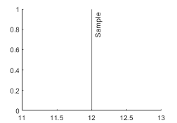
|
| Multiline text | Specify a cell array of character vectors or a string array. Each element in the array is a different line of text. |
xline(12,'-',{'Sample','x=12'}) 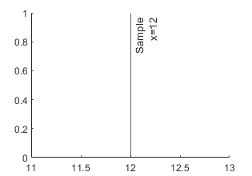 |
Create Labels for Multiple Lines
Specify a character vector or a string scalar to display the same label next to all the lines. Specify a cell array of character vectors or a string array to display different labels for each line.
| Presentation | How to Specify labels | Example |
|---|---|---|
| One shared text label | Specify a character vector or a string scalar. |
xline([13 20 33],'-','Sample')
|
| Different labels for each line | Specify a cell array of character vectors or a string array. Each
element in the array is a label for a different line. The number of elements
in the labels array must match the length of
x. |
label = {'Sample 1','Sample 2','Sample 3'};
xline([13 20 33],'-',label)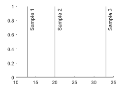 |
| Different labels with some multiline labels | Create a cell array of character vectors or a string array. Use the
sprintf function to insert
newline characters ('\n') in the text. |
label = {'Sample 1',sprintf('Sample 2\nx=20'),'Sample 3'};
xline([13 20 33],'-',label)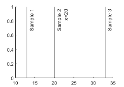 |

Name-Value Arguments
Specify optional pairs of arguments as
Name1=Value1,...,NameN=ValueN, where Name is
the argument name and Value is the corresponding value.
Name-value arguments must appear after other arguments, but the order of the
pairs does not matter.
Before R2021a, use commas to separate each name and value, and enclose
Name in quotes.
Example: xline(5,'LabelVerticalAlignment','middle') specifies the
vertical alignment of the label as 'middle'.
Note
The properties listed here are only a subset. For a complete list, see ConstantLine Properties.
Line color, specified as an RGB triplet, a hexadecimal color code, a color name, or a short name.
For a custom color, specify an RGB triplet or a hexadecimal color code.
An RGB triplet is a three-element row vector whose elements specify the intensities of the red, green, and blue components of the color. The intensities must be in the range
[0,1], for example,[0.4 0.6 0.7].A hexadecimal color code is a string scalar or character vector that starts with a hash symbol (
#) followed by three or six hexadecimal digits, which can range from0toF. The values are not case sensitive. Therefore, the color codes"#FF8800","#ff8800","#F80", and"#f80"are equivalent.
Alternatively, you can specify some common colors by name. This table lists the named color options, the equivalent RGB triplets, and the hexadecimal color codes.
| Color Name | Short Name | RGB Triplet | Hexadecimal Color Code | Appearance |
|---|---|---|---|---|
"red" | "r" | [1 0 0] | "#FF0000" |
|
"green" | "g" | [0 1 0] | "#00FF00" |
|
"blue" | "b" | [0 0 1] | "#0000FF" |
|
"cyan"
| "c" | [0 1 1] | "#00FFFF" |
|
"magenta" | "m" | [1 0 1] | "#FF00FF" |
|
"yellow" | "y" | [1 1 0] | "#FFFF00" |
|
"black" | "k" | [0 0 0] | "#000000" |
|
"white" | "w" | [1 1 1] | "#FFFFFF" |
|
"none" | Not applicable | Not applicable | Not applicable | No color |
This table lists the default color palettes for plots in the light and dark themes.
| Palette | Palette Colors |
|---|---|
Before R2025a: Most plots use these colors by default. |
|
|
|
You can get the RGB triplets and hexadecimal color codes for these palettes using the orderedcolors and rgb2hex functions. For example, get the RGB triplets for the "gem" palette and convert them to hexadecimal color codes.
RGB = orderedcolors("gem");
H = rgb2hex(RGB);Before R2023b: Get the RGB triplets using RGB =
get(groot,"FactoryAxesColorOrder").
Before R2024a: Get the hexadecimal color codes using H =
compose("#%02X%02X%02X",round(RGB*255)).
Example: 'g'
Example: [0.6 0.2 0.5]
Example: '#D2F9A7'
Line width, specified as a positive value in points.
Horizontal alignment of the label with respect to the line, specified as one of the options in the table.
| Option | Description | Example |
|---|---|---|
'right' | Right side of the line. |
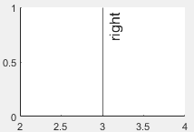 |
'left' | Left side of the line. |
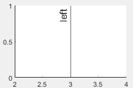 |
'center' | Center of the line. The label segments the line. |
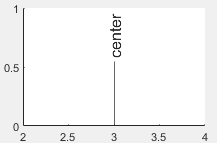 |
Vertical alignment of the label with respect to the line, specified as one of the options in the table.
| Option | Description | Example |
|---|---|---|
'top' | Top of the line |
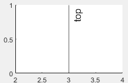 |
'middle' | Middle of the line |
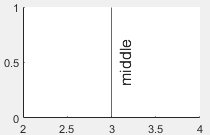 |
'bottom' | Bottom of the line |
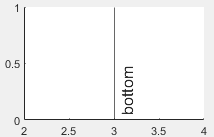 |
Label orientation, specified as 'aligned' or
'horizontal'. Examples are shown in the table.
| Orientation | Description | Example |
|---|---|---|
'aligned' | Label has the same orientation as the line. |
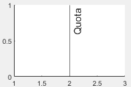 |
'horizontal' | Label is horizontal, regardless of the line orientation. |
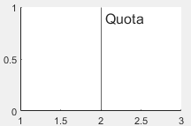 |
Algorithms
In a 3-D view of the axes, the constant line appears in the x-y plane at the midpoint of the z-axis limits. If the axes are rotated, then the constant line rotates accordingly.
Version History
Introduced in R2018b